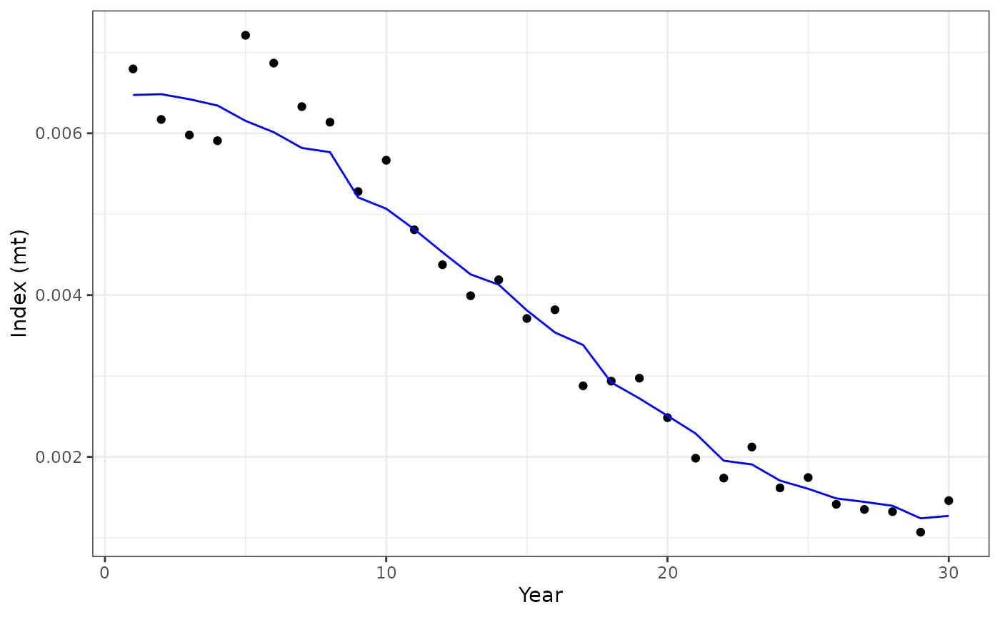
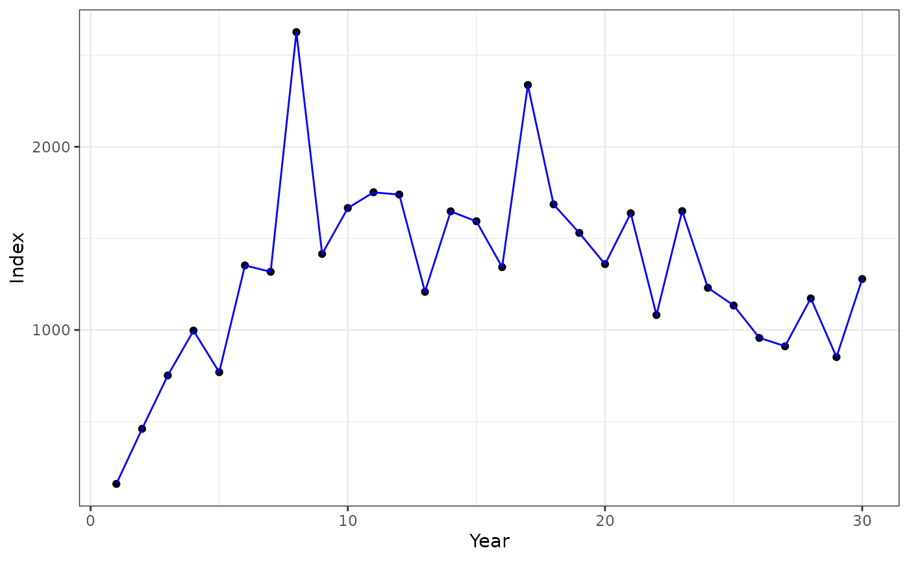

Introducing the Fisheries Integrated Modeling System (FIMS)
Source:vignettes/fims-demo.Rmd
fims-demo.RmdFisheries Integrated Modeling System
The NOAA Fisheries Integrated Modeling System (FIMS) is a new modeling framework for fisheries modeling. FIMS is a software system designed and architected to support next-generation fisheries stock assessment, ecosystem, and socioeconomic modeling. It’s important to note that FIMS itself is not a model, but rather a framework for creating models. The framework is made up of many modules that come together to create a “the best model” that suites the needs of the end-user. What follows is a demo of creating a catch-at-age assessment model using FIMS.
Creating Models in FIMS
To begin, we import the FIMS and TMB libraries. Calling
library(FIMS) automatically loads the Rcpp functions and
modules into the R environment. The function call, clear(),
ensures C++ memory from any previous fims model run is cleared out.
Setting up Data
Data and variable values are taken from the Li et. al. Model Comparison project (github site). See R/data_mile1.R and tests/testthat/test-fims-estimation.R for details on how data and variable values are read into FIMS from the Model Comparison project.
First let’s set up the dimensions of the model based on the Model Comparison project:
nyears <- 30 # the number of years which we have data for.
nseasons <- 1 # the number of seasons in each year. FIMS currently defaults to 1
ages <- c(1, 2, 3, 4, 5, 6, 7, 8, 9, 10, 11, 12) # age vector.
nages <- 12 # the number of age groups.Preparing Data using FIMSFrame
We will be reading data into the model using the FIMSFrame S4 R class set up in R/fimsframe.R
The fims_frame object contains a @data slot
that holds a long data frame with catch data for the fishery and index
data for the survey:
str(fims_frame)## Formal class 'FIMSFrame' [package "FIMS"] with 8 slots
## ..@ data :'data.frame': 1140 obs. of 8 variables:
## .. ..$ type : chr [1:1140] "landings" "landings" "landings" "landings" ...
## .. ..$ name : chr [1:1140] "fleet1" "fleet1" "fleet1" "fleet1" ...
## .. ..$ age : int [1:1140] NA NA NA NA NA NA NA NA NA NA ...
## .. ..$ datestart : chr [1:1140] "1-01-01" "2-01-01" "3-01-01" "4-01-01" ...
## .. ..$ dateend : chr [1:1140] "1-12-31" "2-12-31" "3-12-31" "4-12-31" ...
## .. ..$ value : num [1:1140] 160 461 752 997 770 ...
## .. ..$ unit : chr [1:1140] "mt" "mt" "mt" "mt" ...
## .. ..$ uncertainty: num [1:1140] 0.01 0.01 0.01 0.01 0.01 0.01 0.01 0.01 0.01 0.01 ...
## ..@ fleets : num 1
## ..@ n_years : int 9
## ..@ ages : int [1:12] 1 2 3 4 5 6 7 8 9 10 ...
## ..@ n_ages : int 12
## ..@ weight_at_age:'data.frame': 360 obs. of 8 variables:
## .. ..$ type : chr [1:360] "weight-at-age" "weight-at-age" "weight-at-age" "weight-at-age" ...
## .. ..$ name : chr [1:360] "fleet1" "fleet1" "fleet1" "fleet1" ...
## .. ..$ age : int [1:360] 1 1 1 1 1 1 1 1 1 1 ...
## .. ..$ datestart : chr [1:360] "1-01-01" "2-01-01" "3-01-01" "4-01-01" ...
## .. ..$ dateend : chr [1:360] "1-12-31" "2-12-31" "3-12-31" "4-12-31" ...
## .. ..$ value : num [1:360] 0.000531 0.000531 0.000531 0.000531 0.000531 ...
## .. ..$ unit : chr [1:360] "mt" "mt" "mt" "mt" ...
## .. ..$ uncertainty: num [1:360] NA NA NA NA NA NA NA NA NA NA ...
## ..@ start_year : int 1
## ..@ end_year : int 9## type name age datestart dateend value unit uncertainty
## 1 landings fleet1 NA 1-01-01 1-12-31 160.2363 mt 0.01
## 2 landings fleet1 NA 2-01-01 2-12-31 460.6336 mt 0.01
## 3 landings fleet1 NA 3-01-01 3-12-31 752.1299 mt 0.01
## 4 landings fleet1 NA 4-01-01 4-12-31 996.9872 mt 0.01
## 5 landings fleet1 NA 5-01-01 5-12-31 769.6972 mt 0.01
## 6 landings fleet1 NA 6-01-01 6-12-31 1352.7309 mt 0.01## type name age datestart dateend value unit uncertainty
## 1 index survey1 NA 1-01-01 1-01-01 0.006795379 mt 0.2
## 2 index survey1 NA 2-01-01 2-01-01 0.006170738 mt 0.2
## 3 index survey1 NA 3-01-01 3-01-01 0.005977854 mt 0.2
## 4 index survey1 NA 4-01-01 4-01-01 0.005907966 mt 0.2
## 5 index survey1 NA 5-01-01 5-01-01 0.007211237 mt 0.2
## 6 index survey1 NA 6-01-01 6-01-01 0.006867264 mt 0.2Using this data frame, we will start setting up the FIMS data objects. This example from the Model Comparison project sets up a single fishery fleet with age composition and catch data and a single survey with age composition data and an index. Data are read into FIMS as long vectors, regardless of their original dimension, hence the motivation behind the long data frames created with the fimsframe S4 classes.
# fishery data
fishery_catch <- FIMS::m_landings(fims_frame)
fishery_agecomp <- FIMS::m_agecomp(fims_frame, "fleet1")
# survey data
survey_index <- FIMS::m_index(fims_frame, "survey1")
# survey agecomp not set up in fimsframe yet
survey_agecomp <- FIMS::m_agecomp(fims_frame, "survey1")Creating Modules in FIMS
Now that we’ve prepared the data, let’s pass it into FIMS. Each
module in the FIMS-R interface is made of S4 objects. These S4 objects
serve as a interface between R and the underlining C++ code that defines
FIMS. Modules are instantiated using the methods::new()
function. We can use methods::show() to view all the fields
(i.e. variables) and methods (i.e. functions) available in a given
module.
The Fleet Module
Fleet Data
Each fleet is required to have data in order to evaluate the objective function. Currently FIMS only has a fleet module that is used to set up both fleets and surveys. FIMS contains an Index module and AgeComp module to pass data objects into the fleet module. Each of these data modules require a dimension be added to indicate the dimensions of the raw data (e.g. nyears x nages matrix). Any years with missing data should be specified with a value set to -999. Given this information, FIMS is able to correctly apply dimension folding for model output.
Using the methods::show() function, we can see that the
Index module has a vector field named index_data and the
AgeComp module has a vector field names age_comp_data.
show(Index)## C++ class 'Index' <0x556025f56e70>
## Constructors:
## Index(int)
##
## Fields:
## Rcpp::Vector<14, Rcpp::PreserveStorage> index_data
##
## Methods:
## unsigned int get_id()
##
show(AgeComp)## C++ class 'AgeComp' <0x55602755d9d0>
## Constructors:
## AgeComp(int, int)
##
## Fields:
## Rcpp::Vector<14, Rcpp::PreserveStorage> age_comp_data
##
## Methods:
## unsigned int get_id()
## We’ll create both index and age composition modules for the fleet
using the methods::new() function and pass in the data
defined above from the Model Comparison project.
# fleet index data
fishing_fleet_index <- methods::new(Index, nyears)
# fleet age composition data
fishing_fleet_age_comp <- methods::new(AgeComp, nyears, nages)
fishing_fleet_index$index_data <- fishery_catch # unit: mt
# Effective sampling size is 200
fishing_fleet_age_comp$age_comp_data <- fishery_agecomp * 200 # unit: number at age; proportion at age also worksFleet Selectivity
Now that we’ve passed in data for the fishing fleet, we need to set
up its selectivity module. We will set this to be selectivity function
using the LogisticSelectivity module. Themethods::show()
function indicates this module has two parameter fields:
inflection_point and slope, and an
evaluate() and get_id() function.
Each variable of Parameter
class has three additional fields: value,
is_random_effect, and estimated. Currently, FIMS is
not set up to run random effects. The default value for this field and
the estimate field is currently set to FALSE. We
can use the value field to input variables defined in the Model
Comparison project.
methods::show(LogisticSelectivity)## C++ class 'LogisticSelectivity' <0x556025f573f0>
## Constructors:
## LogisticSelectivity()
##
## Fields:
## Parameter inflection_point
## Parameter slope
##
## Methods:
## double evaluate(double)
##
## unsigned int get_id()
##
fishing_fleet_selectivity <- methods::new(LogisticSelectivity)
fishing_fleet_selectivity$inflection_point$value <- 2.0
fishing_fleet_selectivity$inflection_point$is_random_effect <- FALSE
fishing_fleet_selectivity$inflection_point$estimated <- TRUE
fishing_fleet_selectivity$slope$value <- 1.0
fishing_fleet_selectivity$slope$is_random_effect <- FALSE
fishing_fleet_selectivity$slope$estimated <- TRUECreating the Fleet Object
Now that we’ve created everything that a fleet needs, lets create the
actual fleet object. First let’s run methods::show(Fleet)
to see all the fields and methods available from R.
show(Fleet)## C++ class 'Fleet' <0x55602755d870>
## Constructors:
## Fleet()
##
## Fields:
## bool estimate_F
## bool estimate_obs_error
## bool estimate_q
## bool is_survey
## Rcpp::Vector<14, Rcpp::PreserveStorage> log_Fmort
## Rcpp::Vector<14, Rcpp::PreserveStorage> log_obs_error
## double log_q
## int nages
## int nyears
## bool random_F
## bool random_q
##
## Methods:
## void SetAgeCompLikelihood(int)
##
## void SetIndexLikelihood(int)
##
## void SetObservedAgeCompData(int)
##
## void SetObservedIndexData(int)
##
## void SetSelectivity(int)
## We can see that there are five boolean flags: estimate_F, estimate_q, and is_survey, random_F, and random_q. There are two vectors, log_Fmort and log_obs_error, and a double, log_q. There are two integer fields for the number of ages and years. Additionally, there are five Methods: SetAgeCompLikelihood, SetIndexLikelihood, SetObservedAgeCompData, SetObservedIndexData, and setSelectivity. The last three of these will be used to link up the AgeComp, Index, and Selectivity modules defined above with the fleet module defined below.
# Create fleet module
fishing_fleet <- methods::new(Fleet)
# Set nyears and nages
fishing_fleet$nages <- nages
fishing_fleet$nyears <- nyears
# Set values for log_Fmort
fishing_fleet$log_Fmort <- log(c(
0.009459165, 0.02728886, 0.04506364,
0.06101782, 0.04860075, 0.08742055,
0.0884472, 0.1866079, 0.109009, 0.1327043,
0.1506155, 0.161243, 0.1166402, 0.1693461,
0.1801919, 0.1612405, 0.3145732, 0.2572476,
0.2548873, 0.2514621, 0.3491014, 0.2541077,
0.4184781, 0.3457212, 0.3436855, 0.3141712,
0.3080268, 0.4317453, 0.3280309, 0.4996754
))
# Turn on estimation for F
fishing_fleet$estimate_F <- TRUE
fishing_fleet$random_F <- FALSE
# Set value for log_q
fishing_fleet$log_q <- log(1.0)
fishing_fleet$estimate_q <- FALSE
fishing_fleet$random_q <- FALSE
fishing_fleet$log_obs_error <- rep(log(sqrt(log(0.01^2 + 1))), nyears)
fishing_fleet$estimate_obs_error <- FALSE
# Next two lines not currently used by FIMS
fishing_fleet$SetAgeCompLikelihood(1)
fishing_fleet$SetIndexLikelihood(1)
# Set Index, AgeComp, and Selectivity using the IDs from the modules defined above
fishing_fleet$SetObservedIndexData(fishing_fleet_index$get_id())
fishing_fleet$SetObservedAgeCompData(fishing_fleet_age_comp$get_id())
fishing_fleet$SetSelectivity(fishing_fleet_selectivity$get_id())The Survey Module
We will now repeat the steps from Fleet to set up the Survey. A survey object is essentially the same as a fleet object with a catchability (q) variable.
Survey Data
# fleet index data
survey_fleet_index <- methods::new(Index, nyears)
# survey age composition data
survey_fleet_age_comp <- methods::new(AgeComp, nyears, nages)
survey_fleet_index$index_data <- survey_index # unit: mt; it's possible to use other units as long as the index is assumed to be proportional to biomass
# Effective sampling size is 200
survey_fleet_age_comp$age_comp_data <- survey_agecomp * 200 # unit: number at age; proportion at age also worksSurvey Selectivity
survey_fleet_selectivity <- new(LogisticSelectivity)
survey_fleet_selectivity$inflection_point$value <- 1.5
survey_fleet_selectivity$inflection_point$is_random_effect <- FALSE
survey_fleet_selectivity$inflection_point$estimated <- TRUE
survey_fleet_selectivity$slope$value <- 2.0
survey_fleet_selectivity$slope$is_random_effect <- FALSE
survey_fleet_selectivity$slope$estimated <- TRUECreating the Survey Object
survey_fleet <- methods::new(Fleet)
survey_fleet$is_survey <- TRUE
survey_fleet$nages <- nages
survey_fleet$nyears <- nyears
survey_fleet$estimate_F <- FALSE
survey_fleet$random_F <- FALSE
survey_fleet$log_q <- log(3.315143e-07)
survey_fleet$estimate_q <- TRUE
survey_fleet$random_q <- FALSE
# sd = sqrt(log(cv^2 + 1)), sd is log transformed
survey_fleet$log_obs_error <- rep(log(sqrt(log(0.2^2 + 1))), nyears)
survey_fleet$estimate_obs_error <- FALSE
survey_fleet$SetAgeCompLikelihood(1)
survey_fleet$SetIndexLikelihood(1)
survey_fleet$SetSelectivity(survey_fleet_selectivity$get_id())
survey_fleet$SetObservedIndexData(survey_fleet_index$get_id())
survey_fleet$SetObservedAgeCompData(survey_fleet_age_comp$get_id())Creating a Population
The final step is to set up the population module. Before doing so, we first need to set up each component of the population (e.g. recruitment, growth, etc.).
Recruitment
We’ll use a Beverton Holt recruitment module. We first instantiate a
module using the methods::new() function. We can use
methods::show() to view all the fields (i.e. variables) and
methods (i.e. functions) available in
BevertonHoltRecruitment module.
# Recruitment
recruitment <- methods::new(BevertonHoltRecruitment)
methods::show(BevertonHoltRecruitment)## C++ class 'BevertonHoltRecruitment' <0x55602755d710>
## Constructors:
## BevertonHoltRecruitment()
##
## Fields:
## bool estimate_log_devs
## Rcpp::Vector<14, Rcpp::PreserveStorage> log_devs
## Parameter log_rzero
## Parameter log_sigma_recruit
## Parameter logit_steep
##
## Methods:
## double evaluate(double, double)
##
## double evaluate_nll()
##
## unsigned int get_id()
## There are three parameters we need to set-up: log_sigma_recruit, log_rzero, and logit_steep.
recruitment$log_sigma_recruit$value <- log(0.4)
recruitment$log_rzero$value <- log(1e+06) # unit: log(number)
recruitment$log_rzero$is_random_effect <- FALSE
recruitment$log_rzero$estimated <- TRUE
recruitment$logit_steep$value <- -log(1.0 - 0.75) + log(0.75 - 0.2)
recruitment$logit_steep$is_random_effect <- FALSE
recruitment$logit_steep$estimated <- FALSEWe also need to set up log recruitment deviations. FIMS recruitment modules have a boolean, estimate_log_devs to specify whether or not log deviations are estimated; and a vector, log_devs to set the log deviation values.
recruitment$estimate_log_devs <- FALSE
recruitment$log_devs <- c(
0.08904850, 0.43787763, -0.13299042, -0.43251973,
0.64861200, 0.50640852, -0.06958319, 0.30246260,
-0.08257384, 0.20740372, 0.15289604, -0.21709207,
-0.13320626, 0.11225374, -0.10650836, 0.26877132,
0.24094126, -0.54480751, -0.23680557, -0.58483386,
0.30122785, 0.21930545, -0.22281699, -0.51358369,
0.15740234, -0.53988240, -0.19556523, 0.20094360,
0.37248740, -0.07163145
)Growth
Now, we’ll define the growth module for our population using an empirical weight at age model.
Maturity
Each population will also need a maturity model. Here we define a logistic maturity model.
# Maturity
maturity <- new(LogisticMaturity)
maturity$inflection_point$value <- 2.25
maturity$inflection_point$is_random_effect <- FALSE
maturity$inflection_point$estimated <- FALSE
maturity$slope$value <- 3
maturity$slope$is_random_effect <- FALSE
maturity$slope$estimated <- FALSENow that our life history sub-models are defined, lets define the actual population.
# Population
population <- new(Population)
population$log_M <- rep(log(0.2), nyears * nages)
population$estimate_M <- FALSE
population$log_init_naa <- log(c(
993947.5, 811707.8, 661434.4,
537804.8, 436664.0, 354303.4,
287397.0, 233100.2, 189054.0,
153328.4, 124353.2, 533681.3
)) # unit: in number
population$estimate_init_naa <- TRUE
population$nages <- nages
population$ages <- ages
population$nfleets <- 2 # 1 fleet and 1 survey
population$nseasons <- nseasons
population$nyears <- nyearsNow we need to link up the recruitment, growth, and maturity modules
we set above with this new population module. We do this by calling
get_id() from each respective module and passing that
unique ID into each respective Set function from
population.
population$SetMaturity(maturity$get_id())
population$SetGrowth(ewaa_growth$get_id())
population$SetRecruitment(recruitment$get_id())Fitting the Model
opt <- nlminb(obj$par, obj$fn, obj$gr,
control = list(eval.max = 800, iter.max = 800)
) # , method = "BFGS",
# control = list(maxit=1000000, reltol = 1e-15))
print(opt)## $par
## p p p p p p
## 1.9456156 1.0764473 -4.6411966 -3.5795395 -3.0704151 -2.7617478
## p p p p p p
## -2.9960569 -2.3981724 -2.3821367 -1.6271671 -2.1804411 -1.9816406
## p p p p p p
## -1.8755256 -1.8164938 -2.1337966 -1.7742773 -1.7263029 -1.8263010
## p p p p p p
## -1.1621931 -1.3539840 -1.3713981 -1.4168989 -1.1117784 -1.4087680
## p p p p p p
## -0.8779823 -1.0650768 -1.0952198 -1.2164856 -1.2289849 -0.8988719
## p p p p p p
## -1.1404636 -0.6719079 1.4735211 1.9285236 -14.8994804 13.8145609
## p p p p p p
## 13.6979419 13.6164017 13.4500417 13.1536646 12.9040654 12.6809984
## p p p p p p
## 12.6197724 12.2562516 12.2909417 11.7644063 11.9287000 13.0971041
##
## $objective
## [1] 2539.418
##
## $convergence
## [1] 0
##
## $iterations
## [1] 271
##
## $evaluations
## function gradient
## 411 272
##
## $message
## [1] "relative convergence (4)"TMB Reporting
sdr <- TMB::sdreport(obj)
sdr_fixed <- summary(sdr, "fixed")
report <- obj$report(obj$env$last.par.best)
print(sdr_fixed)## Estimate Std. Error
## p 1.9456156 0.071966193
## p 1.0764473 0.069197267
## p -4.6411966 0.038909651
## p -3.5795395 0.036845605
## p -3.0704151 0.035250841
## p -2.7617478 0.033941390
## p -2.9960569 0.032200586
## p -2.3981724 0.030170443
## p -2.3821367 0.028825861
## p -1.6271671 0.028535823
## p -2.1804411 0.027910842
## p -1.9816406 0.026371135
## p -1.8755256 0.025391094
## p -1.8164938 0.024857260
## p -2.1337966 0.024389624
## p -1.7742773 0.023760306
## p -1.7263029 0.023576062
## p -1.8263010 0.023766854
## p -1.1621931 0.024809536
## p -1.3539840 0.026966611
## p -1.3713981 0.028531719
## p -1.4168989 0.029257136
## p -1.1117784 0.030580895
## p -1.4087680 0.033022633
## p -0.8779823 0.037061240
## p -1.0650768 0.042655310
## p -1.0952198 0.046308000
## p -1.2164856 0.049976075
## p -1.2289849 0.054371888
## p -0.8988719 0.061785686
## p -1.1404636 0.070405033
## p -0.6719079 0.081805341
## p 1.4735211 0.045085254
## p 1.9285236 0.137975542
## p -14.8994804 0.043505292
## p 13.8145609 0.008160554
## p 13.6979419 0.061661476
## p 13.6164017 0.060381438
## p 13.4500417 0.064298023
## p 13.1536646 0.073968671
## p 12.9040654 0.084172537
## p 12.6809984 0.095329449
## p 12.6197724 0.100861986
## p 12.2562516 0.126932961
## p 12.2909417 0.134810259
## p 11.7644063 0.205480823
## p 11.9287000 0.238295591
## p 13.0971041 0.103885791
# report out nll components
report$rec_nll # recruitment## [1] 0
report$index_nll # fishery catch and survey index## [1] -128.4122
report$age_comp_nll # fishery and survey age composition## [1] 2667.83Plotting Results
library(ggplot2)
index_results <- data.frame(
observed = survey_fleet_index$index_data,
expected = report$exp_index[[2]]
)
print(index_results)## observed expected
## 1 0.006795379 0.006474688
## 2 0.006170738 0.006484443
## 3 0.005977854 0.006422377
## 4 0.005907966 0.006344031
## 5 0.007211237 0.006153830
## 6 0.006867264 0.006013952
## 7 0.006329387 0.005819038
## 8 0.006137000 0.005766983
## 9 0.005279601 0.005207819
## 10 0.005666829 0.005068040
## 11 0.004806935 0.004812831
## 12 0.004374876 0.004529311
## 13 0.003992211 0.004255915
## 14 0.004188884 0.004129138
## 15 0.003711145 0.003811237
## 16 0.003818704 0.003538016
## 17 0.002878658 0.003383206
## 18 0.002936660 0.002920966
## 19 0.002972886 0.002722725
## 20 0.002484963 0.002508795
## 21 0.001983795 0.002289333
## 22 0.001738507 0.001953055
## 23 0.002122178 0.001907208
## 24 0.001617189 0.001707296
## 25 0.001745169 0.001606312
## 26 0.001414111 0.001487141
## 27 0.001350571 0.001444138
## 28 0.001323396 0.001395933
## 29 0.001069791 0.001241002
## 30 0.001459411 0.001271027
ggplot(index_results, aes(x = 1:nyears, y = observed)) +
geom_point() +
xlab("Year") +
ylab("Index (mt)") +
geom_line(aes(x = 1:nyears, y = expected), color = "blue") +
theme_bw()
catch_results <- data.frame(
observed = fishing_fleet_index$index_data,
expected = report$exp_index[[1]]
)
print(catch_results)## observed expected
## 1 160.2363 160.2385
## 2 460.6336 460.5628
## 3 752.1299 751.9333
## 4 996.9872 997.1089
## 5 769.6972 769.5302
## 6 1352.7309 1351.3767
## 7 1317.7236 1316.8230
## 8 2626.0240 2622.0952
## 9 1415.1162 1414.7725
## 10 1666.0168 1665.2075
## 11 1751.8060 1750.4662
## 12 1739.5435 1738.9603
## 13 1208.5391 1208.8241
## 14 1647.6643 1647.4244
## 15 1593.6254 1593.8898
## 16 1343.2277 1342.7109
## 17 2337.0098 2330.7538
## 18 1685.7172 1685.4367
## 19 1529.8325 1530.5660
## 20 1359.5044 1363.3055
## 21 1637.5099 1638.6292
## 22 1081.9126 1080.3986
## 23 1648.7687 1646.4270
## 24 1230.1199 1233.1494
## 25 1133.8784 1133.5293
## 26 956.5872 958.0262
## 27 911.0781 913.1846
## 28 1172.4887 1174.4853
## 29 852.1934 852.0463
## 30 1278.3228 1278.1376
ggplot(catch_results, aes(x = 1:nyears, y = observed)) +
geom_point() +
xlab("Year") +
ylab("Index (mt)") +
geom_line(aes(x = 1:nyears, y = expected), color = "blue") +
theme_bw()